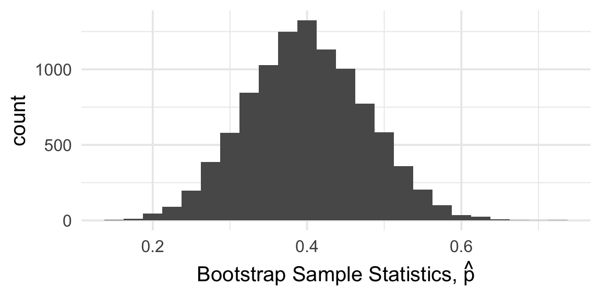
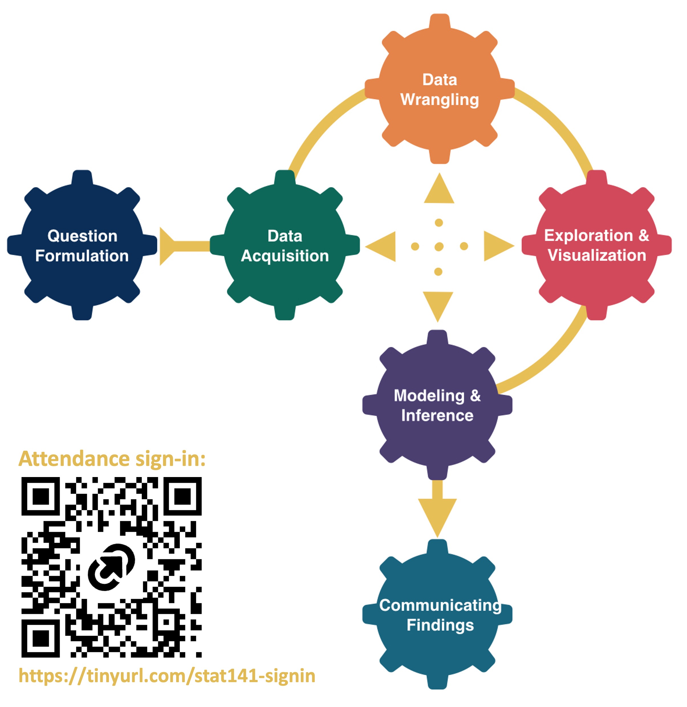
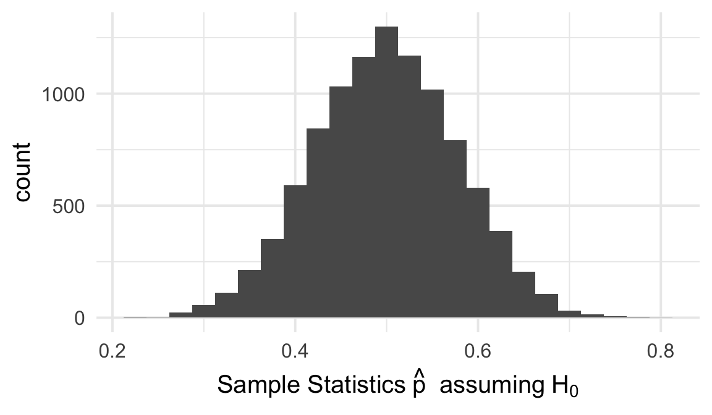
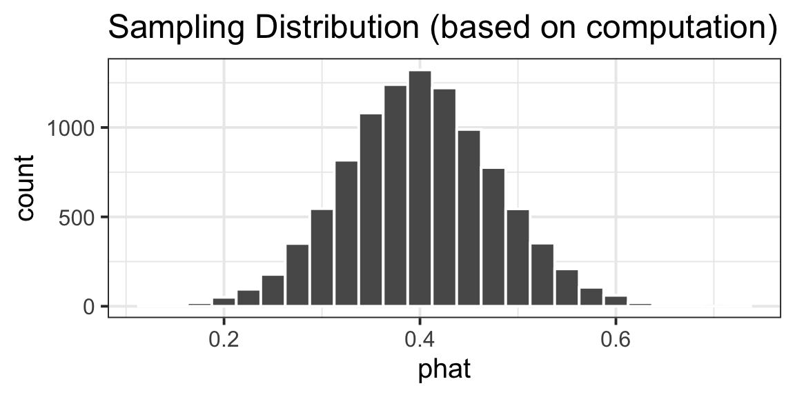
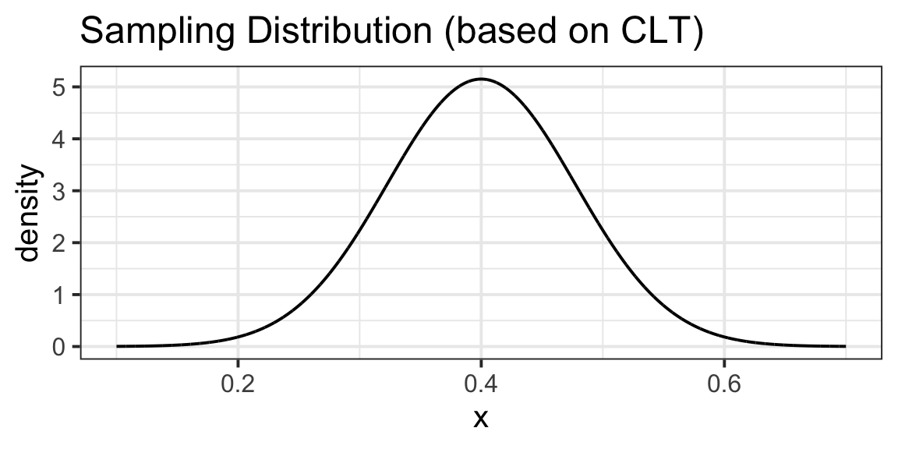
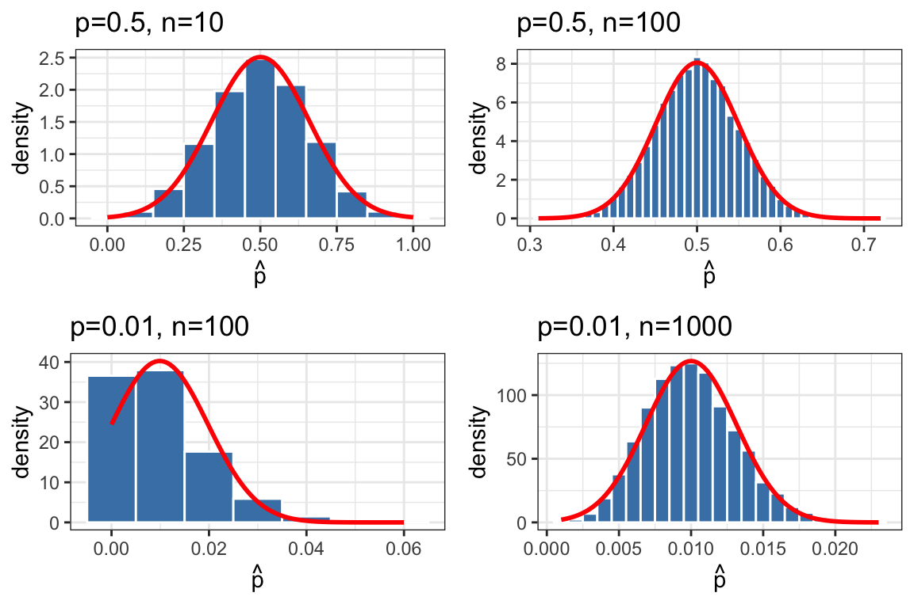
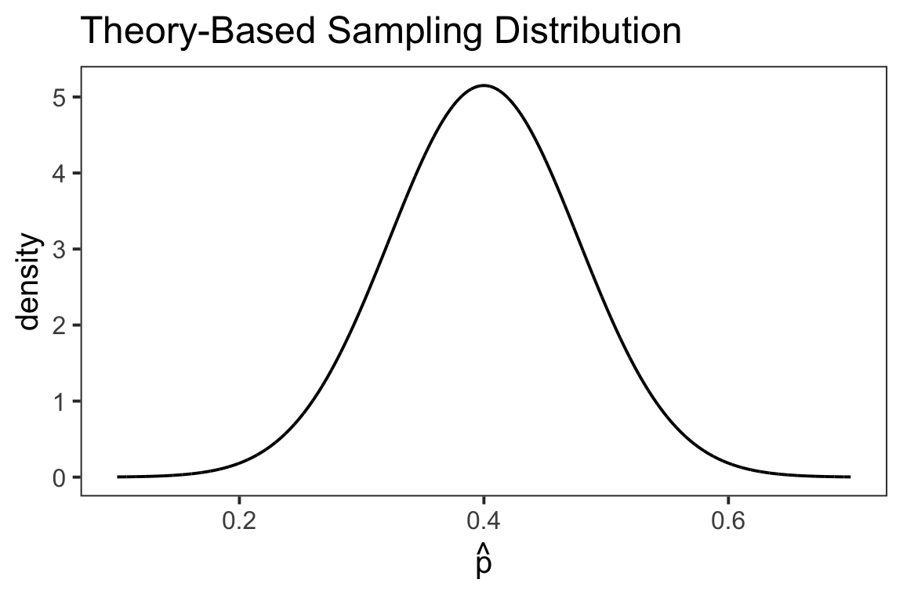
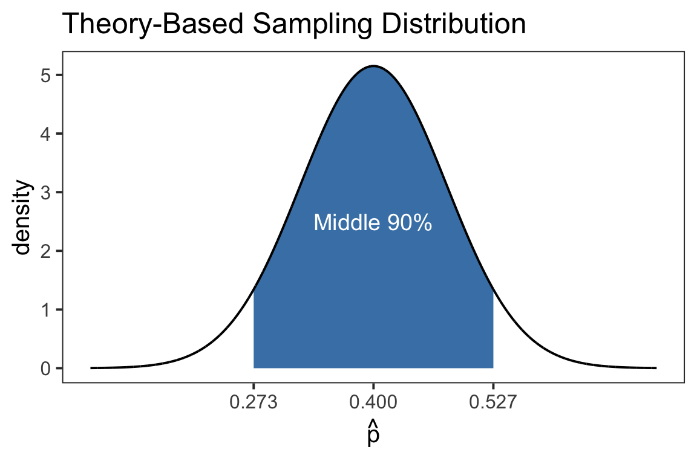
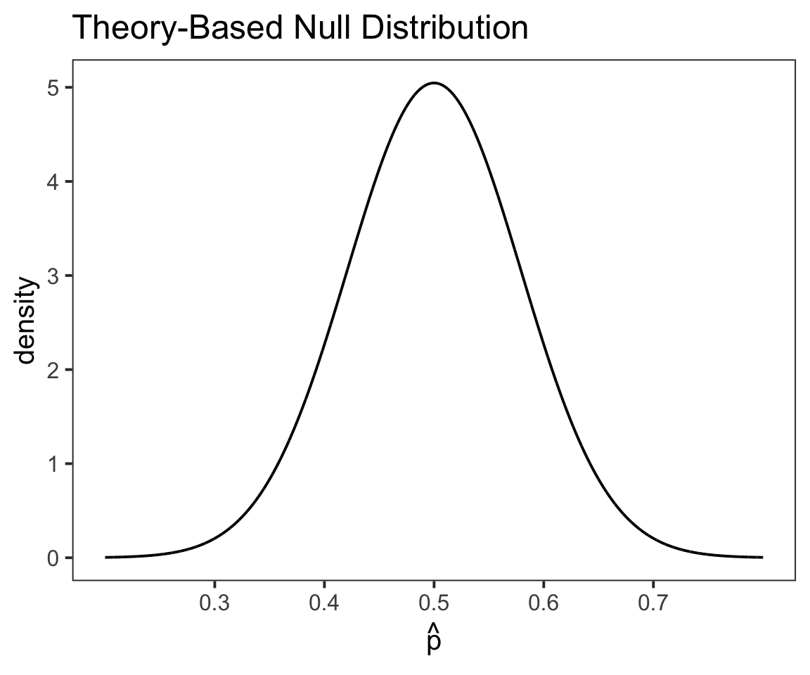
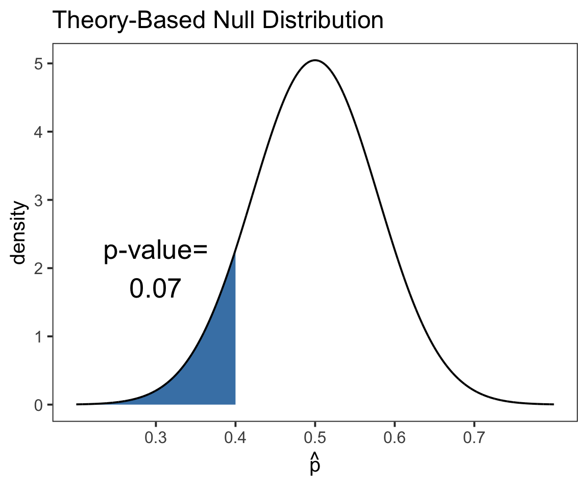

Theory Based Inference I
Megan Ayers
Stat 141 | Fall 2026
Monday, Week 11
Review how to conduct inference
Apply the Central Limit Theorem to the Binomial distribution
Practice “theory-based inference” for one proportion
Statistical Inference: Estimating or testing claims about a parameter in a population, using a statistic in a sample.
Ex: To understand proportion of Reedies who are vegetarians, we survey 40 students. 16 of the 40 are vegetarians.
We have seen two types of inference procedures:
Confidence Intervals
Hypothesis Testing
Let’s review each…
Confidence Intervals: plausible ranges of values for a parameter
Ex: What proportion of Reedies are vegetarians?
Population: All Reedies
Parameter: \(p\) = Proportion of Reedies who are vegetarians
Sample: \(n=40\) students, of which 16 were vegetarian.
Statistic: \(\widehat{p} = 16/40 = 0.4\)
Until now, we have learned to construct confidence intervals using Bootstrap Distributions:

Bootstrap distribution: Approximation of sampling distribution
Sample \(n\) observations with replacement from the sample
For each “bootstrap sample”, calculate/plot the statistic
Hypothesis Tests: formal procedure for testing claims about a parameter
Ex: Are less than 50% of Reedies vegetarians?
Parameter: \(p\) = Proportion of Reedies who are vegetarians
Statistic: \(\widehat{p} = 16/40 = 0.4\)
State Hypotheses: \(H_0: p=0.5\); \(H_a: p<0.5\)
We need to construct the Null Distribution:

Null distribution: Sampling distribution assuming \(H_0\)
Many times, sample \(n\) observations from population assumed under \(H_0\)
For each “sample”, calculate/plot the statistic
P-Value: Area under curve to the left of \(\widehat{p}\) is \(0.07\)
Compare to Significance Level: Using \(\alpha = 0.05\), we would fail to reject \(H_0\).
Both inference procedures require a sampling distribution of a statistic:
Confidence Intervals: Approximate with our bootstrap distribution (based on our sample)
Hypothesis Testing: Simulate a sampling distribution assuming a population under \(H_0\)
We’ve had to use simulation in R to find these “distributions of statistics”
In small samples, the code works and runs relatively quickly.
In larger samples, or with complicated statistics, this can be more computationally costly.
Could we do this work more efficiently? Yes! Use the Central Limit Theorem (CLT)!
Last lecture, we found:
Instead of…

… we will instead use:

Theorem: Central Limit Theorem
Suppose a simple random sample of size \(n\) is drawn from a population with finite mean \(\mu\) and finite standard deviation \(\sigma\). Let \(\bar{x}\) be the sample mean. When \(n\) is large, then approximately \[\bar{x} \sim Normal\Big(\mu, \frac{\sigma}{\sqrt{n}}\Big)\]
Goal: Can we write a sample proportion \(\widehat{p}\) as a sample mean?
Theorem: Central Limit Theorem
Suppose a simple random sample of size \(n\) is drawn from a population with finite mean \(\mu\) and finite standard deviation \(\sigma\). Let \(\bar{x}\) be the sample mean. When \(n\) is large, then approximately \[\bar{x} \sim Normal\Big(\mu, \frac{\sigma}{\sqrt{n}}\Big)\]
Bernoulli Random Variables: If \(X_i\sim \text{Bernoulli}(p)\), then \[\mu = E(X_i) = p \ \ \ \text{and} \ \ \ \sigma = SD(X) = \sqrt{p(1-p)}\]
\(\widehat{p} = \bar{x}\)
Plugging this in to CLT, \(\widehat{p} \sim \text{Normal}\Big(p, \sqrt{\frac{p(1-p)}{n}}\Big)\)
Theorem: Theory-Based Sampling Distribution for One Sample Proportion
Given a SRS of size \(n\) drawn from a population with true proportion \(p\), when \(n\) is large the sample proportion \(\widehat{p}\) is distributed as: \[\widehat{p} \sim \text{Normal}\Big(\ p, \ \sqrt{\frac{p(1-p)}{n}}\ \Big)\]
Traditionally, \(n\) is considered “large enough” when there are:
10 or more “successes”, and
10 or more “failures”
Mathematically,
\(n \widehat{p} \geq 10\), and
\(n (1 - \widehat{p}) \geq 10\)
\[\textbf{Theory-Based Sampling Distribution:} \ \ \ \widehat{p} \sim \text{Normal}\Big(\ p, \ \sqrt{\frac{p(1-p)}{n}}\ \Big)\]

Ex: What proportion of Reedies are vegetarians?
Population: All Reedies
Parameter: \(p\) = Proportion of Reedies who are vegetarians
Sample: \(n=40\) students, of which 16 were vegetarian.
Statistic: \(\widehat{p} = 16/40 = 0.4\)
Sampling Distribution:
Theoretical sampling distribution: \(\widehat{p} \sim \text{Normal}(p,\sqrt{p(1-p)/n})\)
For our best guess, substitute \(\widehat{p}=0.4\) for \(p\): \(\widehat{p} \sim \text{Normal}(0.4,\sqrt{0.4(1-0.4)/40})\)

Ex: What proportion of Reedies are vegetarians?
Population: All Reedies
Parameter: \(p\) = Proportion of Reedies who are vegetarians
Sample: \(n=40\) students, of which 16 were vegetarian.
Statistic: \(\widehat{p} = 16/40 = 0.4\)
Sampling Distribution:
Theoretical sampling distribution: \(\widehat{p} \sim \text{Normal}(p,\sqrt{p(1-p)/n})\)
For our best guess, substitute \(\widehat{p}=0.4\) for \(p\): \(\widehat{p} \sim \text{Normal}(0.4,\sqrt{0.4(1-0.4)/40})\)
Quantiles of this distribution give us confidence intervals, ex. \((0.273, \ 0.527)\)

When making (percentile) confidence intervals using computational methods, we:
Specify our population, and parameter
Collect a sample, and calculate the statistic
Create a bootstrap distribution to approximate the sampling distribution
Use quantiles of the approximated sampling distribution to make a confidence interval
Q: Which steps above are the same and which are different with our new “theory-based” way?
Only #3 is different!
“Old Way”: Collect bootstrap samples
“Theory-based Way”: Use CLT, which gives a “theoretical” sampling distribution of \[\widehat{p} \sim \text{Normal}(\widehat{p},\sqrt{\widehat{p}(1-\widehat{p})/n})\]
Ex: Are less than 50% of Reedies vegetarians?
Parameter: \(p\) = Proportion of Reedies who are vegetarians
Statistic: \(\widehat{p} = 16/40 = 0.4\)
State Hypotheses: \(H_0: p=0.5\); \(H_a: p<0.5\)
Null Distribution:
Theoretical sampling distribution: \(\widehat{p} \sim \text{Normal}(p,\sqrt{p(1-p)/n})\)
For null distribution, substitute “null value” \(p=0.5\): \(\widehat{p} \sim \text{Normal}(0.5,\sqrt{0.5(1-0.5)/40})\)

Ex: Are less than 50% of Reedies vegetarians?
Parameter: \(p\) = Proportion of Reedies who are vegetarians
Statistic: \(\widehat{p} = 16/40 = 0.4\)
State Hypotheses: \(H_0: p=0.5\); \(H_a: p<0.5\)
Null Distribution:
Theoretical sampling distribution: \(\widehat{p} \sim \text{Normal}(p,\sqrt{p(1-p)/n})\)
For null distribution, substitute “null value” \(p=0.5\): \(\widehat{p} \sim \text{Normal}(0.5,\sqrt{0.5(1-0.5)/40})\)
P-Value: In this case, area under curve to the left of \(\widehat{p}=0.4\). Here, \(\text{P-Value}=0.07\).

When conducting hypothesis tests, we:
Specify our population, and parameter
State null (\(H_0\)) and alternative (\(H_a\)) hypotheses, e.g., \[ H_0: p = p_0 \qquad \qquad H_a: p \neq p_0 \ \ \text{or} \ \ p < p_0 \ \ \text{or} \ \ p > p_0 \]
Collect a sample, and calculate the statistic
Create a null distribution
Use “areas/proportions” of the null distribution distribution to calculate the p-value
Compare p-value to our rejection threshold \(\alpha\), and make a conclusion
Q: Which steps in the above are the same in both the “old” way of doing hypothesis tests, and this new “theory-based” way? Which steps are different?
Only #4 is different! (again, the distribution we use comes from theory instead of simulation)
\[\textbf{CLT-Based Sampling Distribution:} \ \ \ \widehat{p} \sim \text{Normal}\Big(\ p, \ \sqrt{\frac{p(1-p)}{n}}\ \Big)\]
\[\textbf{Confidence Intervals}\] \[\text{Sampling Distribution of } p\] \[(\text{Plug in statistic, }\color{red}{\widehat{p}})\]
\[\text{Normal}\Bigg(\color{red}{\widehat{p}}, \ \sqrt{\frac{\color{red}{\widehat{p}}(1-\color{red}{\widehat{p}})}{n}} \ \Bigg)\]
\[\textbf{Hypothesis Testing}\] \[\text{Null Distribution}\] \[(\text{Plug in null value, }\color{red}{p_0})\]
\[\text{Normal}\Bigg(\color{red}{p_0}, \ \sqrt{\frac{\color{red}{p_0}(1-\color{red}{p_0})}{n}} \ \Bigg)\]
In a SRS of 60 Reedies, 45 have watched the Lord of the Rings trilogy. Create a 80% confidence interval for the true proportion of Reedies who have watched LOTR using theory-based inference.
Carefully go through each step of the inference procedure.
Sketch and write down the assumed sampling distribution of the statistic
Calculate confidence interval (use R)
Interpret your confidence interval in context.
In a SRS of 30 birds in the Reed canyon, 20 are crows. Do we have evidence that more than 60% of birds in the Reed canyon are crows? Conduct a hypothesis test using theory-based inference.
Carefully go through each step of the inference procedure.
Sketch and write down the null distribution
Calculate p-value (use R)
Use your p-value to make a conclusion with \(\alpha=0.10\)